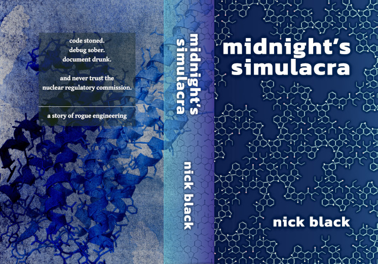

read part i ⏣
musings
errata ⏣
bibliography
amazon hard ⏣
amazon soft ⏣
direct purchase
04-20 week sale: 42% off direct order paper+hardbacks!
It was at first about the science.
It became about the cash.
Then it was about personal LSD supplies, and then the world's LSD supply.
We didn't intend to become a nuclear power; doing so proved counterproductive.
But understand, please: it was always about the science.
Michael Luis Bolaño is the scion of Mexican oil wealth gone to rut in
Texas. Sherman Spartacus Katz is the hyperliterate son of evangelical
eccentrics from the North Georgia mountains. One hopes to restore what's
been lost, the other to attain what never was. Together
they train as engineers; together they study forbidden teachings.
By graduation, they're formidably competent, audacious to a fault,
ungovernable.
Need illicit precursors? Biosynthesize them in yeast.
Need souped-up wheelchairs? Disarm the governors.
Need enriched uranium? CO₂ TEA lasers in the garage.
Where there's a black market, they disrupt it.
Where there's no black market, they create one.
midnight's simulacra is a hysterical, scientifically rigorous, slow burn
of a thriller, a modern picaresque, a portrait of autists as young men, and
unlike any other novel you've read.
code stoned. debug sober. document drunk.
and never trust the nuclear regulatory commission.
A story of rogue engineering.

direct purchase
Ebook ($10 + tax)
Of course there's no DRM.
I'm currently distributing the ebook as PDF and EPUB3 (Amazon distributes
a KF8, converted from my EPUB via black box). Buying the ebook gets you both
formats, in perpetuity, including access to updates. You'll receive
download links immediately following checkout.
04-20 week sale: 42% off!
Signed hardback ($40$23.20 + $8 shipping)
-->
Signed trade paperback ($20$11.60 + $5 shipping)
I currently have both hardback and paperback stock.
Orders will go out ASAP.
The hardback's cover is case printed. There is no dust jacket.
I use local printer
BookLogix.
Their print quality is outstanding, better than
most of what I've seen from the KDP/Ingram complex
(print quality of both KDP and Ingram has been
better than expected, though they show some variation from facility to facility).
I cannot yet bill beyond the borders of the USA;
hit me up and we can arrange something
shady involving paypal.
I'll sign copies, and write whatever inscription you'd like.
You can specify an inscription at checkout.
If you do not specify anything, or you try to get cute (any "inscribe
a complete and consistent formal system blah blah",
"inscribe a sentence which cannot be inscribed", "inscribe the decimal value of π", "i invest NAME with power of
attorney" type of Gödel/Chaitin/Kaufman horseshit), results are undefined,
and I'll write what I damn well please.
If you don't want your print edition signed, I'd recommend purchasing
from Amazon, as you're likely to get cheaper and faster shipping.
If you think the book costs too much, there are plenty of BitTorrent
trackers where you can get it for free. I like
myanonamouse.
I'd hope in that case that you buy it if you like it, or perhaps
bring me a warm meal, or at least cry out at the moment of your next orgasm
"
midnight's simulacra was the shiiiiiiiiit!" If you purchased a
printed copy, please download the PDF with my blessings.